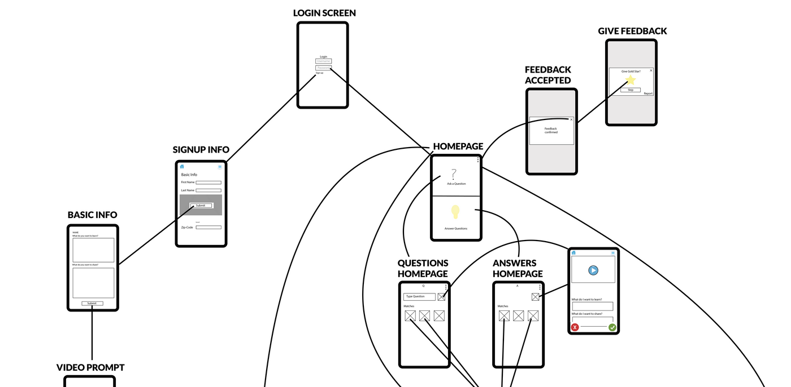

This semester long project began as one idea for an application and took our group on a crazy journey from initial assumptions to final product. We began with the idea for a visualization of a users LinkedIn connections to help them understand and grow their network. Through user research and testing of some initial designs we learned a lot about networking and were led down two major pivots. First we learned that networking has a very negative connotation for our generation. The problem was not that people don't know how to network but that the very idea of it, the very word made them uncomfortable. At this point we decided to reframe our "networking app" as a gateway to mentorship. The idea of mentorship triggered our next pivot, again because of the conotation and how users reacted to our wording. Mentorship seems to convey a long-term dedicated relationship. Users felt this was too much pressure at the start of an interaction. One likened it to asking them to get married instead of just going out for coffee.
Our final app is centered around asking big, life questions, such as 'What is it like to be a woman in tech?'. Users can then search for people to answer their question or search for questions to answer. When connections are made we encourage those users to meet via videochat with the hopes that a good connection will grow and foster a mentor/mentee relationship on its own.